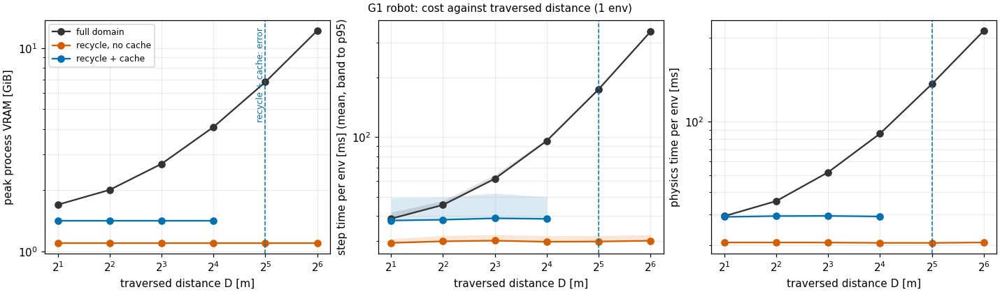
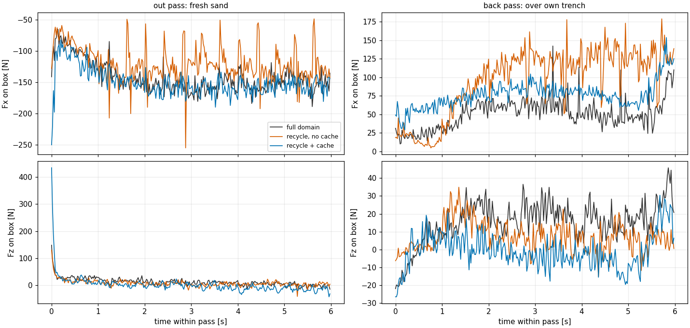
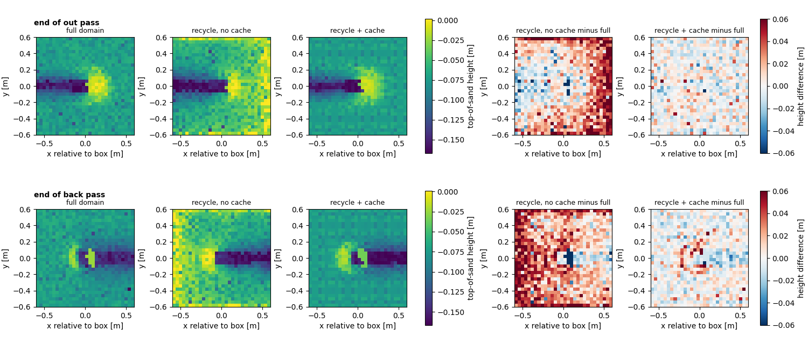

Record: outputs/T1.md. Every result here is unchecked.
Modes (same task family, material, voxel 0.04 m, sand depth 0.25 m, timestep):
GPU: RTX 5080 unless a caption says otherwise. Code: /home/jkamohara/isaac/worktrees/IsaacLab-T1/scripts/benchmarks/t1/, commit dcdc2ff3ca74ff0df59d7008c6fbd8d8c87a1076 (dirty tree). Slides generated by scripts/benchmarks/t1/site_slides.py.
probe_envs and the G1 envs sweep) are written and queued on the 5080 but have produced no results yet. The out-of-memory point of the full-domain mode is therefore not known.
scripts/benchmarks/t1/site_slides.py; data /home/jkamohara/isaac/worktrees/IsaacLab-T1/logs/t1/horde_5080; commit dcdc2ff3ca74ff0df59d7008c6fbd8d8c87a1076 (dirty tree). Dashed line: first failure of that mode (the sweep stops there).| mode | D [m] | status | particles | VRAM MiB | step ms | p95 ms | physics ms |
|---|---|---|---|---|---|---|---|
| full domain | 2 | ok | 97,152 | 1,736 | 38.8 | 41.7 | 29.3 |
| full domain | 4 | ok | 140,800 | 2,054 | 45.5 | 47.6 | 35.7 |
| full domain | 8 | ok | 228,800 | 2,758 | 61.6 | 64.5 | 51.9 |
| full domain | 16 | ok | 404,800 | 4,186 | 95.6 | 97.8 | 85.9 |
| full domain | 32 | ok | 756,800 | 6,970 | 173.9 | 175.9 | 163.7 |
| full domain | 64 | ok | 1,460,800 | 12,472 | 339.5 | 343.1 | 327.5 |
| recycle, no cache | 2 | ok | 20,000 | 1,126 | 29.3 | 30.7 | 20.8 |
| recycle, no cache | 4 | ok | 20,000 | 1,126 | 29.8 | 31.8 | 20.8 |
| recycle, no cache | 8 | ok | 20,000 | 1,126 | 30.0 | 32.3 | 20.8 |
| recycle, no cache | 16 | ok | 20,000 | 1,126 | 29.7 | 31.8 | 20.7 |
| recycle, no cache | 32 | ok | 20,000 | 1,126 | 29.8 | 31.8 | 20.7 |
| recycle, no cache | 64 | ok | 20,000 | 1,126 | 30.0 | 32.2 | 20.8 |
| recycle + cache | 2 | ok | 50,176 | 1,450 | 37.9 | 49.5 | 29.0 |
| recycle + cache | 4 | ok | 50,176 | 1,450 | 38.3 | 49.7 | 29.4 |
| recycle + cache | 8 | ok | 50,176 | 1,450 | 38.9 | 52.1 | 29.4 |
| recycle + cache | 16 | ok | 50,176 | 1,450 | 38.7 | 49.9 | 29.2 |
| recycle + cache | 32 | FAILED | - | - | - | - | - |
RuntimeError: Environment 0: particle cache capacity exceeded. Increase particle_cache.max_cached_particles_per_env; no particles were recycled.probe_terrain) is queued on the 5080 and has not run yet; the plot above is with the G1 robot.A 10 kg, 0.2 x 0.2 x 0.1 m box on a PD-driven gantry is dragged through the sand at depth 6 cm below the settled surface, 0.5 m/s. The trajectory is prescribed and identical in all three modes. Force is the coupled solver's force on the box (world frame).

scripts/benchmarks/t1/site_slides.py; runs logs/t1/probe/dev_full_outback, logs/t1/probe/dev_recycle_nocache_outback, logs/t1/probe/dev_recycle_cache_outback; commit dcdc2ff3ca74ff0df59d7008c6fbd8d8c87a1076 (dirty tree).| pass | mode | mean Fx [N] | mean Fz [N] | rms(Fx - Fx_full) [N] | rms(Fz - Fz_full) [N] | box sinkage [cm] |
|---|---|---|---|---|---|---|
| out | full domain | -153.3 | 5.1 | 0.0 | 0.0 | 6.1 |
| out | recycle, no cache | -124.2 | 2.7 | 36.7 | 11.4 | 6.1 |
| out | recycle + cache | -157.7 | -9.3 | 20.3 | 27.4 | 6.1 |
| back | full domain | 57.5 | 19.0 | 0.0 | 0.0 | 6.1 |
| back | recycle, no cache | 122.6 | 5.5 | 58.7 | 15.1 | 6.1 |
| back | recycle + cache | 82.8 | -2.4 | 29.5 | 20.4 | 6.1 |
Sinkage definition. Depth of the box underside below the undisturbed sand surface at the box position, positive downward. The surface height is the median top-of-particle height under the box after a 2 s pre-settle in the same run. The gantry's vertical axis is position-controlled, so sinkage follows the commanded 6 cm in every mode; the informative quantity here is force. A constant-load press, where sinkage is an outcome, is not done. Force values are single samples per control step (50 Hz).
Observation. The no-cache force trace shows repeated short spikes on the out pass that the other two modes do not. They may coincide with the patch moving and recycling particles under the box (every 0.2 m of travel); this has not been checked against the recycle events.

scripts/benchmarks/t1/site_slides.py; commit dcdc2ff3ca74ff0df59d7008c6fbd8d8c87a1076 (dirty tree).| pass | mode | median difference vs full [cm] | rms difference vs full [cm] |
|---|---|---|---|
| out | recycle, no cache | 1.42 | 3.29 |
| out | recycle + cache | -0.10 | 1.40 |
| back | recycle, no cache | 2.32 | 3.75 |
| back | recycle + cache | -0.11 | 1.60 |
Force traces on the back pass (the revisit) are in the right column of the figure on the previous slide.
Observation. The no-cache surface is higher than full-domain along the edge of the patch the box is moving toward, where recycled sand has just been placed at its initial height and has not consolidated yet (interpretation, consistent with the rest test in outputs/T1.md). On the back pass the no-cache map has lost the trench that full-domain and the cached run keep ahead of and behind the box.
Out and back, 3 m per pass at 0.5 m/s, played at 1x (50 control steps per second). Source: /home/jkamohara/isaac/worktrees/IsaacLab-T1/scripts/benchmarks/t1/bench_probe.py --video_dir (Newton RTX visualizer, fixed camera); originals (1920x1080) /home/jkamohara/isaac/worktrees/IsaacLab-T1/logs/t1/video/probe_<mode>_outback_0000.mp4, shrunk to 1280 px with ffmpeg for this page. Rendered on the RTX 5090 development machine (RTX renderer), one run per mode, commit dcdc2ff3ca74ff0df59d7008c6fbd8d8c87a1076 (dirty tree). Only the simulated patch is drawn as particles; the textured ground around it is the background terrain mesh, not simulated sand. In the recycle + cache clip the saved (unloaded) particles are drawn as well as the loaded patch, so a wider strip is visible; in the full-domain clip the whole bed is drawn.
tasks/T1.md or DECISIONS.md; the lead should decide whether this criterion moves to another task or is answered by a written statement. No result exists.| item | included | excluded |
|---|---|---|
| time per control step | policy or command, MDP terms, all physics substeps, particle recycling, host-side tile paging and cache bookkeeping, GPU synchronization before and after the step | rendering and visualization (off), the first 50 steps (25 for the probe), environment construction and kernel compilation |
| physics time per step | time inside the simulation step, synchronized around it (separate profiled run) | everything outside <code>sim.step</code>; the profiled run is slightly slower because of the synchronization |
| peak VRAM | peak memory of this process from nvidia-smi, polled at 4 Hz (includes the CUDA context) | other processes on the GPU; spikes shorter than 0.25 s may be missed |
| per environment | time and memory divided by the number of environments | - |
| statistics | mean, median, p95, p99 over the measured steps, one run per configuration | no repeats or confidence intervals yet |
Implemented in scripts/benchmarks/t1/bench_domain.py and bench_probe.py.
checked; the lead changes labels after checks/T1.md.